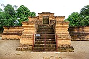

Tourist Location
Usually the places people here go to hangout with their friends and or family is either
the park, the mall, or just a random coffeeshop because there arent that many notable location in jambi regency.
Rather, for tourist destination people need to travel to neighbouring regency called Muaro Jambi where there is
a temple compound called Komplek Candi Muaro Jambi

The above is an image of a temple called candi tinggi, which is one of many tample that are built at Komplek Candi Muaro Jambi